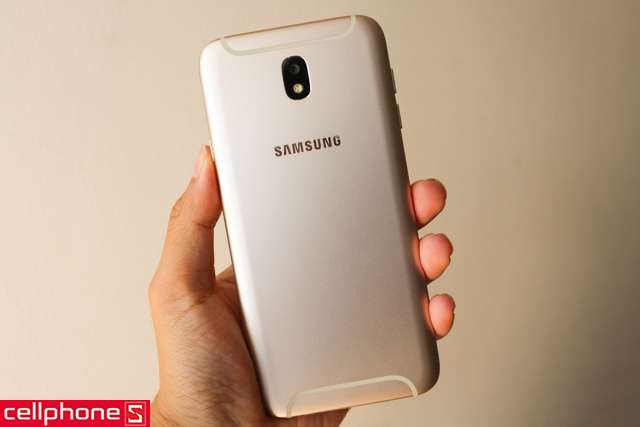
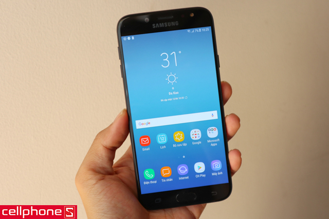
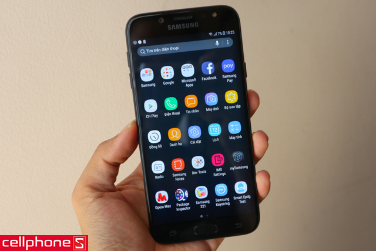
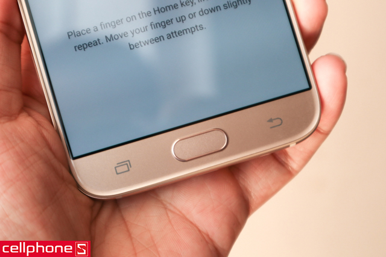
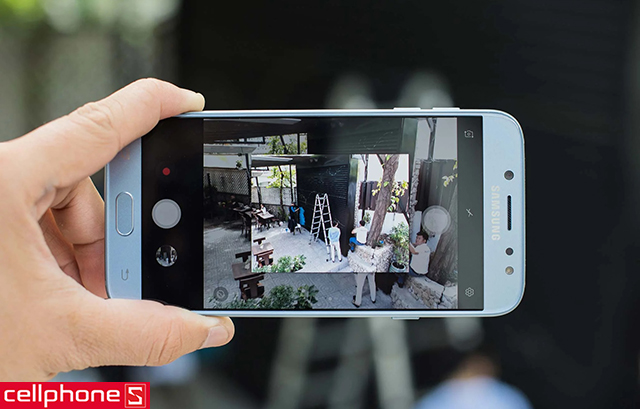
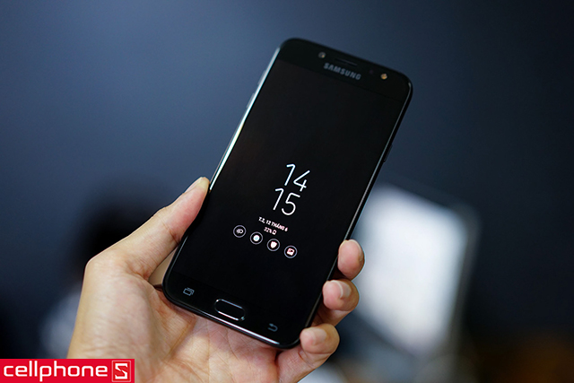

Tìm Kiếm
VuongDiQuyen.com


Giá : 103.000.000Đ
nhanh tay...!!!
Sau thành công vang dội của Galaxy J7 Prime, hãng điện thoại Samsung tiếp tục bổ sung vào dòng Galaxy J một sản phẩm mới là Galaxy J7 Pro. Với nhiều cải tiến giá trị so với người đàn anh, Galaxy J7 Pro hứa hẹn sẽ tiếp tục tạo nên cơn sốt mới ở phân khúc tầm trung.
Thiết kế kim loại sang trọng trên Samsung Galaxy J7 Pro
Galaxy J7 Pro cho cảm giác gọn gàng ở mặt trước nhờ viền màn hình mỏng trong khi mặt sau được cách điệu độc đáo bởi dải 2 dải ăng ten ở đỉnh và đáy máy, tạo nên sự hòa hợp với cụm camera.

Bên cạnh đó, Galaxy J7 Pro sở hữu vỏ ngoài làm từ kim loại nguyên khối bóng bẩy, kết hợp cùng camera sau phẳng tạo nên dáng vẻ siêu mỏng đầy tinh tế.
Màn hình Samsung Galaxy J7 Pro sắc nét đến từng chi tiết nhỏ
Galaxy J7 Pro là chiếc smartphone tầm trung hiếm hoi được Samsung trang bị màn hình Super AMOLED tương tự như những mẫu flagship

Điểm nổi bật của màn Super AMOLED là cho khả năng hiển thị màu sắc rực rỡ, sống động và điều này vẫn hiện diện trên J7 Pro, kết hợp cùng kích thước lớn (5.5 inch) đáp ứng khá tốt nhu cầu giải trí đa phương tiện.
Hiệu năng mượt mà, vận hành tối ưu
Galaxy J7 Pro sử dụng vi xử lý Exynos 7870 tám nhân xung nhịp 1.6 GHz, sản xuất trên tiến trình 14nm tiết kiệm điện năng, RAM đạt mức 3 GB và bộ nhớ trong là 32 GB.

Cấu hình này cho phép chuyển tải UI mượt mà cùng khả năng đáp ứng cùng lúc nhiều tác vụ nhanh chóng. Bên cạnh đó, Smart Manager là công cụ đắc lực giúp bạn kiểm tra và tối ưu hóa tình trạng của thiết bị.
Chế độ Always-on hiển thị thông tin mọi lúc mọi nơi
Samsung đặt vào nút home của Galaxy J7 Pro cảm biến vân tay một chạm giúp người dùng mở khóa chỉ trong tích tắc.

Camera Samsung Galaxy J7 Pro nổi bật trong mọi khoảnh khắc
Galaxy J7 Pro được trang bị camera trước lên đến 13 MP, khẩu độ f/1.9 có hỗ trợ cả đèn flash, trong khi camera sau cũng không hề kém cạnh với độ phân giải 13 MP, khẩu độ f/1.7, đèn flash cùng tính năng tự động lấy nét cực nhanh, mang lại những bức ảnh chụp ngoại ảnh hay chụp selfie chất lượng kể cả trong điều kiện thiếu sáng.

Samsung Galaxy J7 Pro hoạt động bền bỉ suốt một ngày dài
Galaxy J7 Pro được Samsung ưu ái tích hợp viên pin lên đến 3600 mAh, cao hơn cả chiếc smartphone đầu bảng Galaxy S8 Plus. Vì vậy, không có gì ngạc nhiên khi J7 Pro cho thời lượng sử dụng rất lâu, dễ dàng trải qua một ngày dài làm việc và giải trí ở cường độ cao mà không phải sạc lại pin giữa chừng.

Samsung Galaxy J7 Pro Chính hãng được Samsung bảo hành 12 tháng tại các trung tâm ủy quyền của Samsung Việt Nam trên toàn quốc. Ngoài ra, để mang lại lợi ích tối đa cho khách hàng, CellphoneS cung cấp dịch vụ gia hạn bảo hành, bảo hành cả rơi vỡ - rớt nước, giao hàng tận nơi miễn phí và trả góp 0% lãi suất. Nếu bạn đang cần một chiếc smartphone tầm trung thì đây J7 Pro chính là sự lựa chọn phù hợp.
3G: HSPA 42.2/5.76 Mbps
4G: LTE-A (3CA) Cat16 1024/150 Mbps
SIM: 2 SIM (Nano-SIM)
Kích thước: 148.9 x 68.1 x 8.0 mm (5.86 x 2.68 x 0.31 in)
Trọng lượng: 155 g (5.47 oz)
Màn hình: Cảm ứng điện dung Super AMOLED, 16 triệu màu
Kích thước màn hình: 1440 x 2960 pixels, 5.8 inches (~570 ppi mật độ điểm ảnh)
Bộ nhớ trong: 64 GB, 4 GB RAM
Khe cắm thẻ nhớ: microSD, lên đến 256 GB
WLAN: Wi-Fi 802.11 a/b/g/n/ac, dual-band, Wi-Fi Direct, hotspot
Bluetooth: v5.0, A2DP, LE, aptX
USB: v3.1, Type-C 1.0
NFC: Có
GPS: A-GPS, GLONASS, BDS, GALILEO
Hệ điều hành: Android OS, v7.0 (Nougat)
Chipset: Exynos 8895 Octa
CPU: 4x 2.3 GHz M2 Mongoose & 4x 1.7 GHzCortex-A53
GPU: Mali-G71 MP20
Bộ cảm biến: Mống mắt, vân tay, gia tốc, con quay hồi chuyển, khoảng cách, la bàn, phong vũ biểu, nhịp tim, SpO2
Camera chính: 12 MP, f/1.7, 26mm, tự động lấy nét nhận diện theo giai đoạn, OIS, LED flash
Camera phụ: 8 MP, f/1.7, tự động lấy nét, gọi video kép, HDR tự dộng
Video: 2160p@60fps, 1080p@120fps, HDR, quay video kép
Pin: Li-Ion 3000 mAh
Thời gian đàm thoại: 23 giờ (3G)
Thời gian chờ: -
Thời gian chơi nhạc: -


Liên Hệ
trụ sở chính: Redmond, Washington, Hoa Kỳ
phone: 123456789
Góp Ý
email:anhhungxadieu@gmail.com
Đối Tác
điện máy đỏ
thới giới vận động
viên thông B